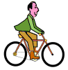
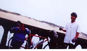
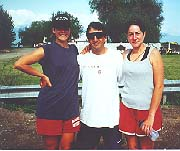

Bike Ride USA Journal
Here We Go.................
Day 1 I started my journey in Florence Oregon. I stayed last night in a little campground called Honeyman.
|  |
| Getting Started |
Day 2 With my knees throbbing and my butt feeling as though I was sitting on steel poles, I headed out to Blue River. A small town with 2 stores a library (with self serve book checkout), post office and an abandon Bar. (closed due to fights and may other rumors). The route followed the McKenzie river. an incredibly beautiful river with water front homes, and park like yards. During the stretch I forgot how my butt and knees felt. Having lived in both Marin and Somoma County, little impresses me but this did. Though the route was longer than the route the crow would fly the miles were well worth it. The stretch had picturebook innocents that words fail to describe. I finished the day in time to ice my knees. While looking for a place to watch the Bulls/Jazz game I hooked up with John. He invited me to his place (a rundown sloping trailer with leaking walls and ceilings)to watch the game with he and his buddies. I supplied the beer, he supplied the ice for my knees. I had not problem with that. I turned in that night with a little buzz, stupid considering what I had to face the next day.
Day 3 Geographically one of the hardest days of the entire 3 month trip. Over the Cascades. A 60+ mile day with and elevation clime of over 4800 ft. Is started at 7:30 and found every excuse to sightsee. While I had 34 miles to get to the summit I had 6 miles of freespinning downhill. With my sweat drying and eyes watering, I thought "life just doesn't get better than this". Miles later, with 10 miles to go til the end of the day, I ran of of water. 5 miles from my days end I had to rest at a store and re-watered. I am wiped and Man am I sore. I finished the day at a campground overlooking Oregon's famous mountains, the 3 Sisters. The campground, Cycle 5 in the town of Sisters
DAY 4 Sisters to Primeville. I have a head cold, my butt is killing me, and my knees are still giving me problems, (I am having a blast). The O'Neil Hwy, was a beautiful stretch with winding streams and towering foothills. It looks like a picture from the old west. I started to imagine Indians coming over the ranges and what type of battles were fought on the meadows that I surrounded me. Wait just a minute......... that was close. I thought some Indians were after me. It started raining on me about 10 miles from my destination Primeville. I stopped at a mini storage unit to get out of the rain and put my gear in plastic bags. ( I was prepared just like any good boy scout would). After about and hour the rains slowed and was on my way. My campsite was an old RV park. The showers were dirty, water was about 75 yds away and my tent site was right on the main road. In other words, it was a dump. Across the way was another campground w/o showers were I met Melissa and Dan. A couple also biking across the States. They were carrying their stuff in bobs. Later that night it poured, only stopping long enough for me to run to the outhouse, 100 yds away, in my underwear by a main road. Ya gotta love it!
DAY 5 Primeville to Mitchell. Met Alex and Brad from Maine and Eugene on the road. It poured again along the route for about 2 hours but this time there was no cover for miles. I was lucky, my stuff was already in bags so it stayed dry, unlike me. In Mitchell, I stayed at the Oregon Hotel with Hostel like accommodations for only $10. I got fresh towels, hot chocolate, muffins in the morning, and listed to live music that night. The warm indoor bed while it was raining outside was nice too. Brad and Alex also stayed inside. Melissa and Dan camped in the local park were they got soaked. I felt sorry for them.............NOT!
DAY 6 Mitchell to Dayville. In Dayville I camped at the Church. All they wanted for pay was a donation. Included was indoor sleeping and a full kitchen. I arrived by myself but by dinner, Melissa and Dan, Bill, Alex and Brad, Len(72 yrs old) and 2 girls Steph and Jen, were at the site. Steph and Jen
|  |
| Steph, Me and Jen |
DAY 7 Dayville to Prairie City. A short 50 mile ride with rain and cold. In Prairie City, I stayed in at a campground that was colder than .............you tell me. Again most of the gang met there, Melissa, Dan, Steph, Jen, Bill, and Myself. We all went to a local pub to watch the Bulls/Jazz game. Some of us were only there to get out of the cold.
Day 8 Prairie City to Baker City. This was one hell of a day covering about 75 miles. The ride went up and down about 2000+ft. When I finally reached the long awaited down hills, they were either so cold my head felt as if I was getting stuck by needles or I was riding against the wind working harder than I was going up hill. Of the gang, only 3 of us made the full ride that day. The rest I am assuming stopped at campgrounds along the way. I am sun, cold, and wind, burned. By the way my butt really hurts too. My first stops in Baker City were the 3 bike shops to get new tires but none had what I needed. I had to stay in Baker City and extra day while tires were being ordered. Here I am. Stuck in Baker City. All the gang from 2 nights ago's pasta party is already broken up. I ended up spending the day on the waiting list trying to get on the internet for this entry. Do you feel sorry for me? Gotta go. The Jazz/Bulls game comes on in less than an hour. I am off to the local pub.
Day Off Waiting all day to get a new tire for my Bike. Mellisa and Dan stayed the night at camp.
Day 9 Baker City to Oxbow. 65 miles. I had the easiest 40 miles I have ever had. It was all down hill with cool air running past my ears. It was going to be a 40 mile day but since the the ride was so great, I put in an extra 25. I took a breather at a store to wait for the BOBs and tell them I am going on. They wanted to also. I met up with Jake at the store. Jake is a 19 year old kid that has been on the road for 20 months already. he started in Phoenix and was also working his way across the states. The extra mikes included a hill call Richards Hill. A steep climb out of the valley I just spent 40 miles getting into. On the hill I passed Bill. He was on the side of the road "admiring the view" Camped that night at Copperland Campground with Melissa, Dan and Bill. Campground owned by the local power company. Not a great camp but great company.
Day 10 Oxbow to Cambridge. Did the Brownee Hill Today. A 7 mile hill up and out of the campground I enjoyed last night. Camped out that night at Water Tower Park. The local laundromat had public showers for campers and the local homeless. Melissa, Dan and Bill and I went to one of the pubs. A great building with no business. We were the only customer the whole night. Just before dark 6 testosterone loaded guys road in after doing 103 miles. .....They did in one day what I did in 2 days. Young punks, I want to kick their asses.
| Back to Top |
|---|